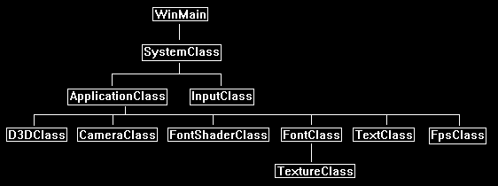

This tutorial will introduce a new class that will encapsulate the functionality of a frames per second counter.
The FpsClass will handle recording the frames per second that the application is running at.
Knowing how many frames are rendered every second gives us a good metric for measuring our application's performance.
This is one of the industry standard metrics that is used to determine acceptable graphics render speed.
FPS counters are also useful when implementing new features to see how they impact the frame speed.
If the new feature cuts the frame speed in half, then you can immediately realize you have a major problem by using just this simple counter.
Keep in mind that the current standard fps speed for computers is 60 fps.
Anything below 60 fps is considered to be performing poorly, and anything below 30 is very noticeable to the human eye.
A general rule when coding is to keep your fps maximized, and if a properly implemented new feature makes a serious dent in that speed, then it needs to be justified and at a minimum taken note of.
Framework
The frame work for this tutorial with the new class looks like the following:

Fpsclass.h
The FpsClass is simply a counter with a timer associated with it.
It counts how many frames occur in a one second period and constantly updates that count.
////////////////////////////////////////////////////////////////////////////////
// Filename: fpsclass.h
////////////////////////////////////////////////////////////////////////////////
#ifndef _FPSCLASS_H_
#define _FPSCLASS_H_
/////////////
// LINKING //
/////////////
#pragma comment(lib, "winmm.lib")
//////////////
// INCLUDES //
//////////////
#include <windows.h>
#include <mmsystem.h>
////////////////////////////////////////////////////////////////////////////////
// Class name: FpsClass
////////////////////////////////////////////////////////////////////////////////
class FpsClass
{
public:
FpsClass();
FpsClass(const FpsClass&);
~FpsClass();
void Initialize();
void Frame();
int GetFps();
private:
int m_fps, m_count;
unsigned long m_startTime;
};
#endif
Fpsclass.cpp
///////////////////////////////////////////////////////////////////////////////
// Filename: fpsclass.cpp
///////////////////////////////////////////////////////////////////////////////
#include "fpsclass.h"
FpsClass::FpsClass()
{
}
FpsClass::FpsClass(const FpsClass& other)
{
}
FpsClass::~FpsClass()
{
}
The Initialize function sets all the counters to zero and starts the timer.
void FpsClass::Initialize()
{
m_fps = 0;
m_count = 0;
m_startTime = timeGetTime();
return;
}
The Frame function must be called each frame so that it can increment the frame count by 1.
If it finds that one second has elapsed then it will store the frame count in the m_fps variable.
It then resets the count and starts the timer again.
void FpsClass::Frame()
{
m_count++;
if(timeGetTime() >= (m_startTime + 1000))
{
m_fps = m_count;
m_count = 0;
m_startTime = timeGetTime();
}
return;
}
GetFps returns the frame per second speed for the last second that just passed.
This function should be constantly queried so the latest fps can be displayed to the screen.
int FpsClass::GetFps()
{
return m_fps;
}
Applicationclass.h
The ApplicationClass has the new FpsClass added to it.
We also include a new function called UpdateFps() that will be called each frame to do the fps processing.
////////////////////////////////////////////////////////////////////////////////
// Filename: applicationclass.h
////////////////////////////////////////////////////////////////////////////////
#ifndef _APPLICATIONCLASS_H_
#define _APPLICATIONCLASS_H_
///////////////////////
// MY CLASS INCLUDES //
///////////////////////
#include "d3dclass.h"
#include "cameraclass.h"
#include "fontshaderclass.h"
#include "fontclass.h"
#include "textclass.h"
#include "fpsclass.h"
/////////////
// GLOBALS //
/////////////
const bool FULL_SCREEN = false;
const bool VSYNC_ENABLED = true;
const float SCREEN_DEPTH = 1000.0f;
const float SCREEN_NEAR = 0.3f;
////////////////////////////////////////////////////////////////////////////////
// Class name: ApplicationClass
////////////////////////////////////////////////////////////////////////////////
class ApplicationClass
{
public:
ApplicationClass();
ApplicationClass(const ApplicationClass&);
~ApplicationClass();
bool Initialize(int, int, HWND);
void Shutdown();
bool Frame();
private:
bool Render();
bool UpdateFps();
private:
D3DClass* m_Direct3D;
CameraClass* m_Camera;
FontShaderClass* m_FontShader;
FontClass* m_Font;
FpsClass* m_Fps;
TextClass* m_FpsString;
int m_previousFps;
};
#endif
Applicationclass.cpp
////////////////////////////////////////////////////////////////////////////////
// Filename: applicationclass.cpp
////////////////////////////////////////////////////////////////////////////////
#include "applicationclass.h"
ApplicationClass::ApplicationClass()
{
m_Direct3D = 0;
m_Camera = 0;
m_FontShader = 0;
m_Font = 0;
m_Fps = 0;
m_FpsString = 0;
}
ApplicationClass::ApplicationClass(const ApplicationClass& other)
{
}
ApplicationClass::~ApplicationClass()
{
}
bool ApplicationClass::Initialize(int screenWidth, int screenHeight, HWND hwnd)
{
char fpsString[32];
bool result;
// Create and initialize the Direct3D object.
m_Direct3D = new D3DClass;
result = m_Direct3D->Initialize(screenWidth, screenHeight, VSYNC_ENABLED, hwnd, FULL_SCREEN, SCREEN_DEPTH, SCREEN_NEAR);
if(!result)
{
MessageBox(hwnd, L"Could not initialize Direct3D", L"Error", MB_OK);
return false;
}
// Create and initialize the camera object.
m_Camera = new CameraClass;
m_Camera->SetPosition(0.0f, 0.0f, -10.0f);
m_Camera->Render();
// Create and initialize the font shader object.
m_FontShader = new FontShaderClass;
result = m_FontShader->Initialize(m_Direct3D->GetDevice(), hwnd);
if(!result)
{
MessageBox(hwnd, L"Could not initialize the font shader object.", L"Error", MB_OK);
return false;
}
// Create and initialize the font object.
m_Font = new FontClass;
result = m_Font->Initialize(m_Direct3D->GetDevice(), m_Direct3D->GetDeviceContext(), 0);
if(!result)
{
return false;
}
Here we create and initialize the FpsClass.
We also set some initial fps values since we won't have a fps until the program runs for one second.
We also create a TextClass so we can render the fps in a string to the screen.
Note that we could have encapsulated the rendering inside the FpsClass, but its better practice to decouple the code whenever possible.
// Create and initialize the fps object.
m_Fps = new FpsClass();
m_Fps->Initialize();
// Set the initial fps and fps string.
m_previousFps = -1;
strcpy_s(fpsString, "Fps: 0");
// Create and initialize the text object for the fps string.
m_FpsString = new TextClass;
result = m_FpsString ->Initialize(m_Direct3D->GetDevice(), m_Direct3D->GetDeviceContext(), screenWidth, screenHeight, 32, m_Font, fpsString, 10, 10, 0.0f, 1.0f, 0.0f);
if(!result)
{
return false;
}
return true;
}
The Shutdown function will release the fps text string and the new FpsClass object.
void ApplicationClass::Shutdown()
{
// Release the text object for the fps string.
if(m_FpsString)
{
m_FpsString->Shutdown();
delete m_FpsString;
m_FpsString = 0;
}
// Release the fps object.
if(m_Fps)
{
delete m_Fps;
m_Fps = 0;
}
// Release the font object.
if(m_Font)
{
m_Font->Shutdown();
delete m_Font;
m_Font = 0;
}
// Release the font shader object.
if(m_FontShader)
{
m_FontShader->Shutdown();
delete m_FontShader;
m_FontShader = 0;
}
// Release the camera object.
if(m_Camera)
{
delete m_Camera;
m_Camera = 0;
}
// Release the Direct3D object.
if(m_Direct3D)
{
m_Direct3D->Shutdown();
delete m_Direct3D;
m_Direct3D = 0;
}
return;
}
bool ApplicationClass::Frame()
{
bool result;
We use a new function to do the FPS updates and processing each frame.
// Update the frames per second each frame.
result = UpdateFps();
if(!result)
{
return false;
}
// Render the graphics scene.
result = Render();
if(!result)
{
return false;
}
return true;
}
bool ApplicationClass::Render()
{
XMMATRIX worldMatrix, viewMatrix, orthoMatrix;
bool result;
// Clear the buffers to begin the scene.
m_Direct3D->BeginScene(0.0f, 0.0f, 0.0f, 1.0f);
// Get the world, view, and projection matrices from the camera and d3d objects.
m_Direct3D->GetWorldMatrix(worldMatrix);
m_Camera->GetViewMatrix(viewMatrix);
m_Direct3D->GetOrthoMatrix(orthoMatrix);
// Disable the Z buffer and enable alpha blending for 2D rendering.
m_Direct3D->TurnZBufferOff();
m_Direct3D->EnableAlphaBlending();
Each frame we Render the FPS string to the screen.
// Render the fps text string using the font shader.
m_FpsString->Render(m_Direct3D->GetDeviceContext());
result = m_FontShader->Render(m_Direct3D->GetDeviceContext(), m_FpsString->GetIndexCount(), worldMatrix, viewMatrix, orthoMatrix,
m_Font->GetTexture(), m_FpsString->GetPixelColor());
if(!result)
{
return false;
}
// Enable the Z buffer and disable alpha blending now that 2D rendering is complete.
m_Direct3D->TurnZBufferOn();
m_Direct3D->DisableAlphaBlending();
// Present the rendered scene to the screen.
m_Direct3D->EndScene();
return true;
}
The new UpdateFps function will update the fps counter each frame.
If the fps ever changes from what its last value was then it will also update the text string that we are using to render the fps text to the screen.
We also set the color of the string according to the speed with green for 60fps and above, yellow for below 60fps, and red for below 30fps.
Also, most of the time a function like this should sit in a user interface type class, but to help keep these tutorials simple we will add it to the ApplicationClass for now.
bool ApplicationClass::UpdateFps()
{
int fps;
char tempString[16], finalString[16];
float red, green, blue;
bool result;
// Update the fps each frame.
m_Fps->Frame();
// Get the current fps.
fps = m_Fps->GetFps();
// Check if the fps from the previous frame was the same, if so don't need to update the text string.
if(m_previousFps == fps)
{
return true;
}
// Store the fps for checking next frame.
m_previousFps = fps;
// Truncate the fps to below 100,000.
if(fps > 99999)
{
fps = 99999;
}
// Convert the fps integer to string format.
sprintf_s(tempString, "%d", fps);
// Setup the fps string.
strcpy_s(finalString, "Fps: ");
strcat_s(finalString, tempString);
// If fps is 60 or above set the fps color to green.
if(fps >= 60)
{
red = 0.0f;
green = 1.0f;
blue = 0.0f;
}
// If fps is below 60 set the fps color to yellow.
if(fps < 60)
{
red = 1.0f;
green = 1.0f;
blue = 0.0f;
}
// If fps is below 30 set the fps color to red.
if(fps < 30)
{
red = 1.0f;
green = 0.0f;
blue = 0.0f;
}
// Update the sentence vertex buffer with the new string information.
result = m_FpsString->UpdateText(m_Direct3D->GetDeviceContext(), m_Font, finalString, 10, 10, red, green, blue);
if(!result)
{
return false;
}
return true;
}
Summary
Now we can see the FPS speed while rendering our scenes.

To Do Exercises
1. Recompile the code and ensure you can see the fps value. Press escape to quit.
2. Turn off the vsync in the applicationclass.h file to see what speed your video card runs the application at.
3. Set the application to full screen in the applicationclass.h with the vsync off to see what speed it runs at.
Source Code
Source Code and Data Files: dx11win10tut15_src.zip